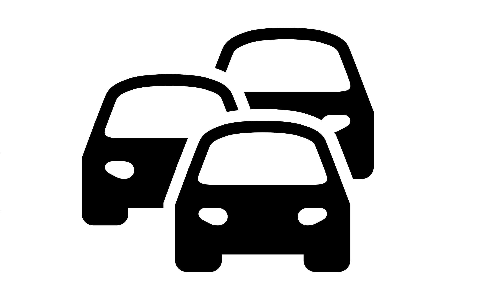

<div id="logo">
    
</div>
<p-menubar [model]="items" *ngIf="isLogged()">
    <ng-template pTemplate="start">
        
    </ng-template>
    <ng-template pTemplate="end">
        <button pButton label="Salir" icon="pi pi-power-off" (click)="salir()"></button>
    </ng-template>
</p-menubar>
<router-outlet></router-outlet>